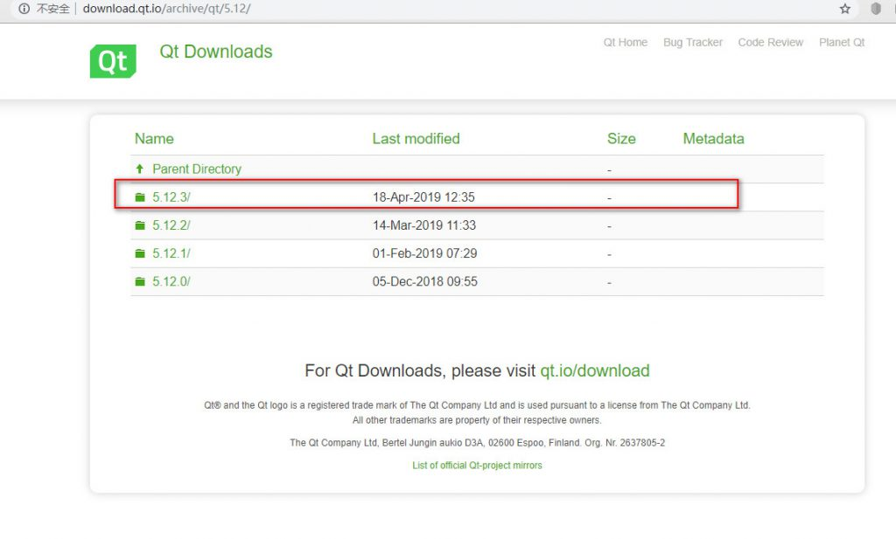
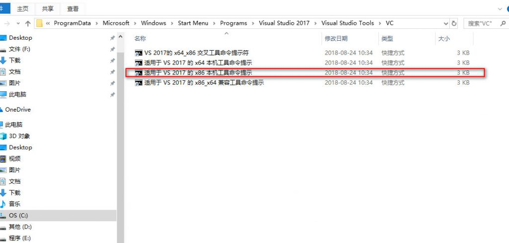
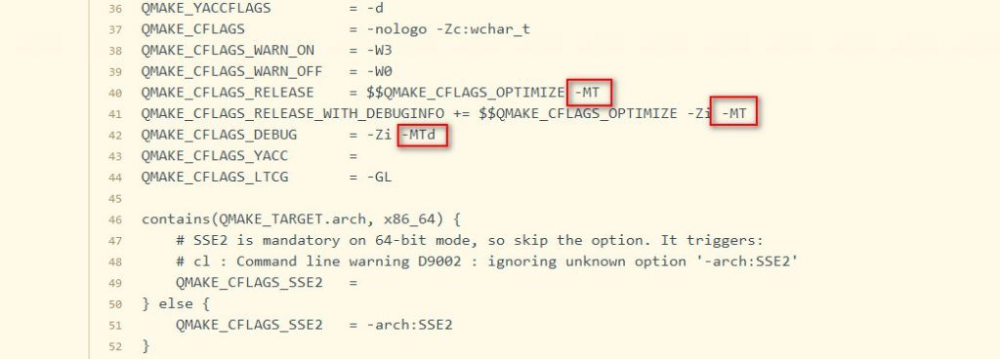
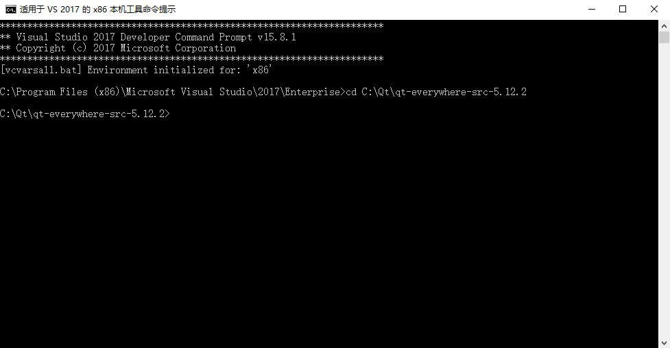
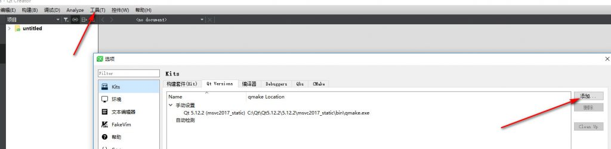
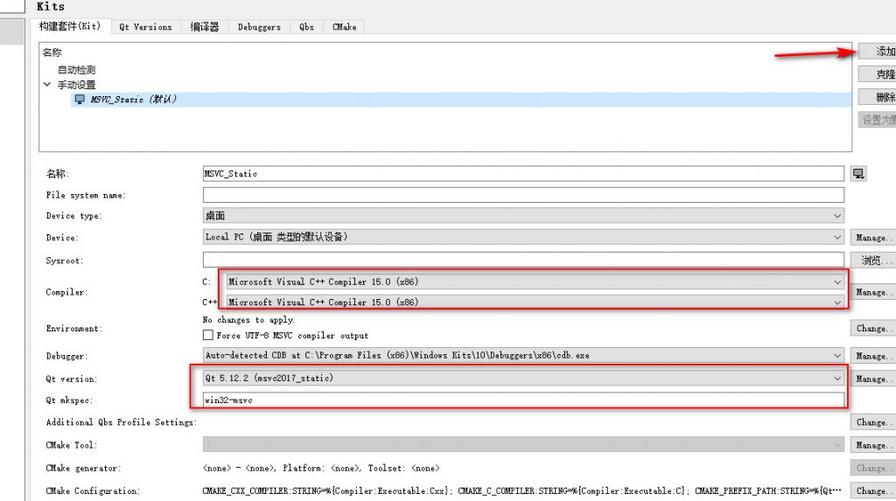

用QtCreator编译程序时，使用的是动态编译。编译好的程序在运行时需要另外加上相应的Qt库文件，一大堆dll文件。如果想将生成的程序连同所需要的库一起完整地打包成一个可执行程序，那就需要使用静态编译。Qt官方不提供静态编译好的安装包，所以需要我们在自己的电脑上静态编译。而且exe文件会比动态编译的要小上很多。
打开网址选择一般选择最新的版本，根据QT官方Qt5.12这一版有长期的技术支持，大约5年的样子稳定性相对来说比较高，所以建议选择这个版本的源码来编译。 我编译的时候才是Qt5.12.2，MD我前天刚编译好今天就跟新到Qt5.12.3。伤不起啊。
安装的编译工具有：
一般来说下载这三个工具就可以，记得要设置环境变量，当然你要编译MSVC版的安装Visual Studio2017，并且安装它。
这次我选择编译x86的静态库，原因很简单。64位的系统可以运行32位的程序，但是反之则不可以，所以选择编译环境位x86
打开源码所在位置（ qtbase\mkspecs\common\msvc-desktop.conf ）找到如图所示位置文件并修改保存：


configure.bat -static -prefix "D:\Qt\msvc2017_static" -confirm-license -opensource -debug-and-release -platform win32-msvc -nomake examples -nomake tests -plugin-sql-sqlite -plugin-sql-odbc -qt-zlib -qt-libpng -qt-libjpeg -opengl desktop -mp configure.bat
-static //指明是静态编译
-prefix "D:\Qt\msvc2017_static" //指明安装的目录
-confirm-license -opensource //指明是开源版本的qt
-debug-and-release //指明需要debug版和release版，可以单独选择release版
-platform win32-msvc //指明使用msvc编译
-nomake examples -nomake tests //不编译样例
-plugin-sql-sqlite -plugin-sql-odbc -qt-zlib -qt-libpng -qt-libjpeg //可选插件
-opengl desktop
-mp //多核编译make
在命令提示工具输入：
nmake
此时源码开始编译，编译时长根据电脑的配置而异，我的电脑I7 7500U Inter240GSSD，大约从早上上班9点种开始编译，在下午6点钟下班的时候没有编译完，等第二天早上上班之后发现已经编译完了，具体多长时间也不知道。乐观12+小时以上。
nmake install
安装完成之后在命令提示工具输入：
nmake install
此时编译号的源码开始安装，这个安装时长大概2个小时左右吧。安装完成之后就可以使用了。
源码编译安装完成之后，需要安装Qt Creator工具来使用我们刚刚编译好的静态QT。首先下载 [QtCreator](http://download.qt.io/official_releases/qtcreator/)依然选择最新版下载并安装。安装完成之后打开开发工具我们需要配置一下才能使用。


** 注意事项：在
配置完以上内容就可以开始放心的编译自己的程序。测试了一下空白程序在release模式下大概11M左右，还是蛮大的吧，优势就是不必担心丢失DLL文件而报错了。
在添加Qt Versions时可能会报“qmlscene 未安装”，出现黄色感叹号。这是你只需将安装Qt官方动态编译的安装包拷贝相应目录里面的“qmlscene.exe”到我们刚刚编译安装的
当你下载别人编译好的静态库或者把自己编译的库移动了一个位置时Qt Versions 位提示错误“qt未正确安装，请使用make install进行安装”。不要怕其实不用重新编译安装的，只需在
[Paths]
Prefix=D:/qt/static** 注意：输入完之后保存时选择“ANSI”，另存为的时候有选择提示选择“ANSI”类型即可。最后将qt.txt改为qt.conf。 **
做好上述8个步骤之后我们的静态环境就彻底搭建好了，然后就欢乐的码代码吧。
附上自己编译的静态库和编译工具 ：链接：https://pan.baidu.com/s/1iB2zoqVTa_nub4OLOmQlsw 提取码：6f2f